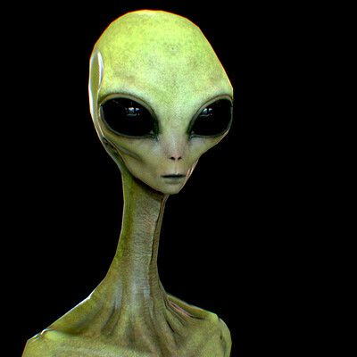
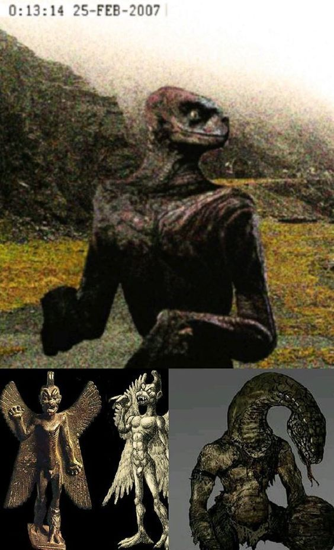
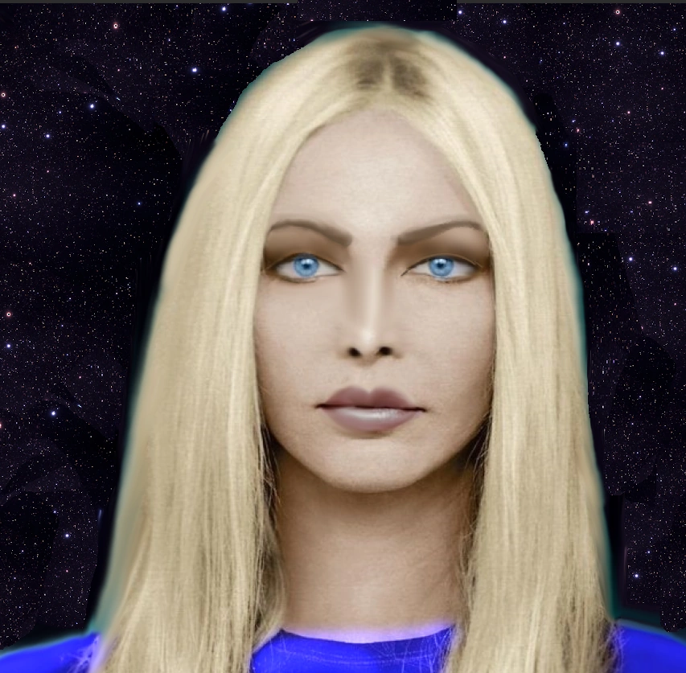
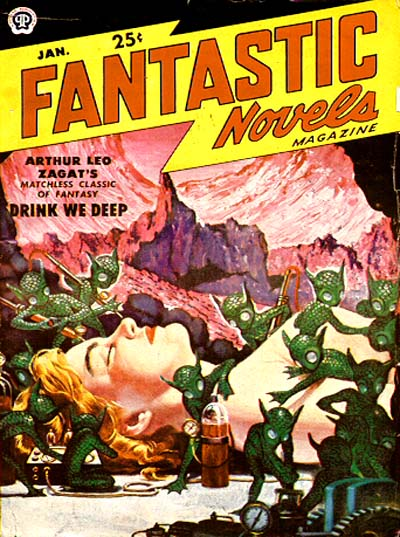

宇宙人特集
グレイ型宇宙人や火星人など、 世界中で報告されている宇宙人を紹介します。 目撃情報や特徴なども掲載しています。
グレイ型宇宙人

グレイ型宇宙人は、世界で最も有名な宇宙人の一つです。 大きな黒い目、細い体、大きな頭が特徴で、多くの目撃談や映画、都市伝説に登場します。 1947年のロズウェル事件や宇宙人による誘拐事件との関係が語られることもあります。
- 身長は約120〜150cm
- 大きな黒い目
- 灰色の肌
- 高い知能を持つと言われている
レプティリアン

レプティリアンは、爬虫類のような姿をした宇宙人として知られています。 緑色のうろこや鋭い目を持ち、高い知能を備えているといわれています。 一部では人間社会に紛れて生活しているという都市伝説もあり、多くのミステリー番組で紹介されています。
- 緑色のうろこを持つ
- 爬虫類のような顔立ち
- 鋭い黄色や赤色の目
- 高い知能と身体能力を持つと言われている
ノルディック型宇宙人

ノルディック型宇宙人は、人間によく似た美しい姿をした宇宙人といわれています。 金髪で背が高く、友好的な性格で地球人を見守っているという説があります。 映画や都市伝説にもたびたび登場する人気の宇宙人です。
- 金髪で背が高い
- 人間によく似た姿
- 青い目を持つと言われる
- 平和的で友好的な性格
リトルグリーンマン

リトルグリーンマンは、小さな緑色の体をした宇宙人として有名です。 映画やアニメにも数多く登場し、かわいらしい見た目で描かれることが多い宇宙人です。 一方で、未知の生命体として世界中で語り継がれています。
- 小柄な体格
- 緑色の肌
- 大きな目と丸い頭
- 映画やアニメに多く登場する